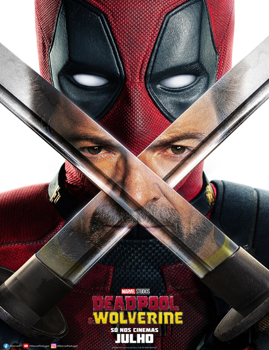

Deadpool & Wolverine
Sinopse
Deadpool & Wolverine reúne o icônico mercenário tagarela Wade Wilson (Ryan Reynolds) e o poderoso mutante Wolverine (Hugh Jackman) em uma aventura explosiva, escrita e produzida pelos mesmos talentos por trás de Deadpool (2016) e Deadpool 2 (2018). Wade Wilson desfruta de um momento de aparente calma ao lado de Vanessa (Morena Baccarin) e seus amigos e, em contra partida, Wolverine se recupera de seus ferimentos. Um têm os seus caminhos cruzados com o outro, dando início a uma improvável aliança. Juntos, eles enfrentam um inimigo formidável em comum, desencadeando uma jornada repleta de ação, humor e reviravoltas surpreendentes. Deadpool & Wolverine promete ser uma aventura épica, cheia de referências aos quadrinhos e momentos de pura adrenalina, proporcionando aos fãs uma experiência única e inesquecível no universo dos super-heróis.
Informações
Gênero:
Ação, Aventura, Fantasia, Comédia
Diretor:
Shawn Levy
Duração:
2 h 8 min
Elenco
Ator/Atriz |
Personagem |
|---|---|
| Ryan Reynolds | Deadpool/Wade Wilson |
| Hugh Jackman | Wolverine/Logan |
| Emma Corrin | Cassandra Nova |
| Matthew Macfadyen | Mr. Paradox |
| Dafne Keen | Laura / X-23 |
| Jon Favreau | Happy Hogan |
| Morena Baccarin | Vanessa |
| Rob Delaney | Peter |
| Leslie Uggams | Blind Al |